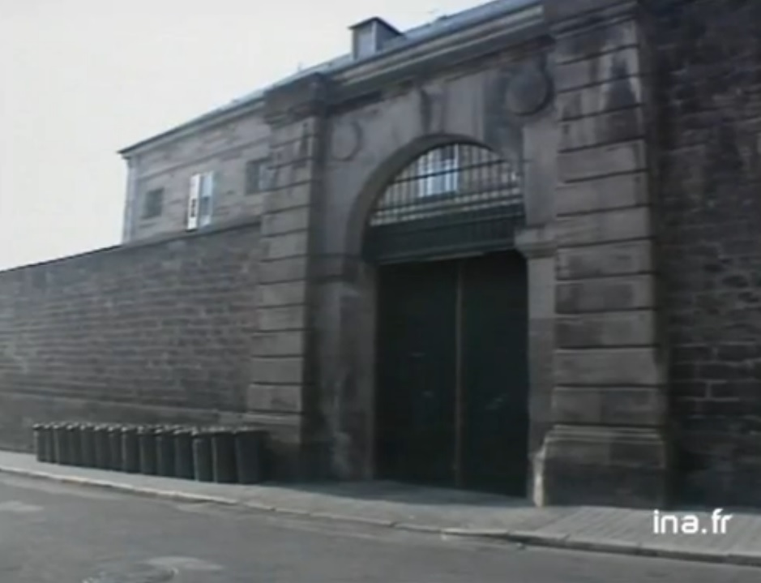
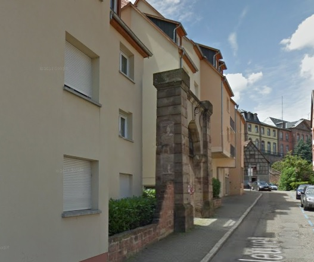
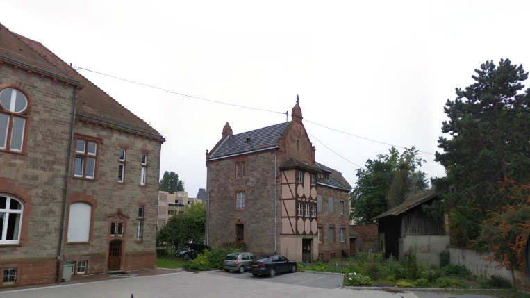
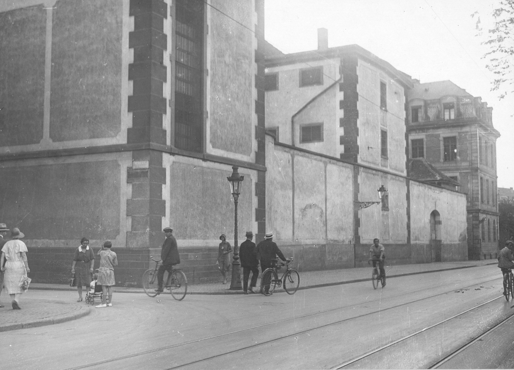
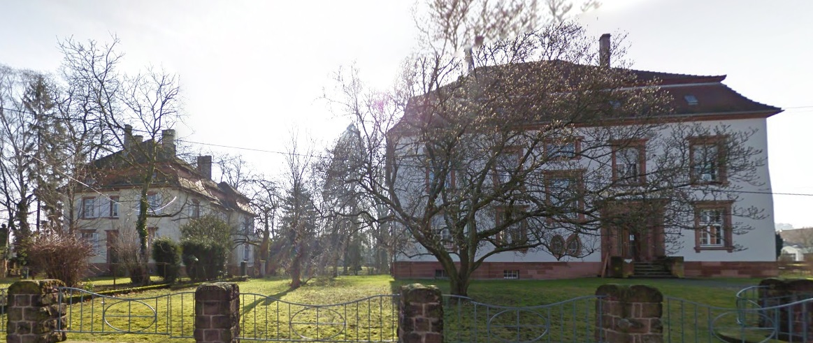
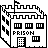

|
|
|
| Département | Images | Ville | Nom | Adresse | Période | Capacité | Histoire du lieu | Nombre d'exécutions |
| Bas-Rhin (67) | Haguenau | Maison centrale pour femmes, puis maison d'arrêt | 24, rue André Traband | 1822-1957 1957-1986 |
Après la désaffection, démolie en partie pour construite l'IUT, puis la médiathèque | Aucune exécution | ||
| Bas-Rhin (67) |   |
Saverne | Maison d'arrêt et de correction | 31, rue Neuve | -1990 | 85 places, 17 surveillants (1962) | Fermée le 15 février 1990. Démolie pour faire place à des immeubles d'habitations, seule la porte monumentale conservée en l'état. | Aucune exécution |
| Bas-Rhin (67) |  |
Séléstat | Maison d'arrêt | 12, rue de la Paix | 1904-1926 | Située dans une petite maison à l'arrière du tribunal local. | Aucune exécution | |
| Bas-Rhin (67) |  |
Strasbourg | Maison d'arrêt et de justice | Rue du Fil - Rue de la Fonderie | 1824-1988 | 124 places, 39 surveillants (1962) 113 places (1988) |
Voisine de l'ancien Palais de justice, alors en service rue de la Nuée Bleue. Démolie à compter de décembre 1992. A la place, l'Institut National d'Etudes Territoriales et un gymnase. | Neuf exécutions en 1890, 1899, 1914, 1921, 1925, 1929 et 1937 |
| Bas-Rhin (67) |  |
Wissembourg | Maison d'arrêt | 4, rue du Tribunal | 1908-1939 | Derrière le tribunal (palais de justice à droite sur la photo). Après sa fermeture, siège de l'Office National des Forêts jusqu'en 2009, puis désormais office notarial. | Aucune exécution |

{kind=link}
{kind=link}
{kind=link}
{kind=link}
{kind=link}